Other workshops in Turin and around
Candle, soap, photography, origami, bookbinding, fablab and other workshops in Turin and around.
Search all workshops52 activities coming up · updated on 23 November 2026
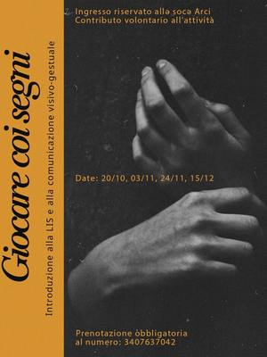
from3novOtherPlaying with signs: Italian Sign Languagefrom Tuesday 3 November to Tuesday 15 December, 18:30Vanchiglietta (TO)with Bocciofila Vanchiglietta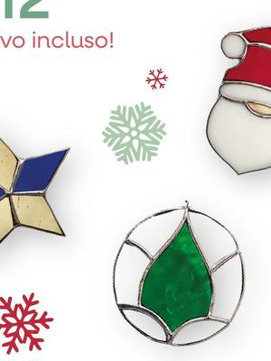
mon23novOtherChristmas mini-workshop: glass decorationMonday 23 November, 19:00–21:00Turin · 35 €with Across the Glass tue24novOtherChristmas candles: festive gobletTuesday 24 NovemberDemonte (CN) · 25 €with Philo Etico at Locanda Lubac
tue24novOtherChristmas candles: festive gobletTuesday 24 NovemberDemonte (CN) · 25 €with Philo Etico at Locanda Lubac from10novOtherRelief carving: a wooden bas-relieffrom Tuesday 10 November to Tuesday 1 December, every Tuesday, 19:00–21:30Barriera di Milano (TO)with Rašid Nikolić (The Gipsy Marionettist) at Bagni Pubblici
from10novOtherRelief carving: a wooden bas-relieffrom Tuesday 10 November to Tuesday 1 December, every Tuesday, 19:00–21:30Barriera di Milano (TO)with Rašid Nikolić (The Gipsy Marionettist) at Bagni Pubblici wed25novOtherAppo: poetry meet-upWednesday 25 November, 18:00Vanchiglia (TO) · Freewith Approdo Poetico Torino at Spazio Costanza
wed25novOtherAppo: poetry meet-upWednesday 25 November, 18:00Vanchiglia (TO) · Freewith Approdo Poetico Torino at Spazio Costanza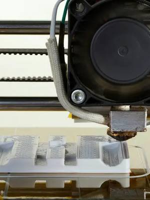
wed25novOtherHow To: 3D printing for beginnersWednesday 25 November, 18:00–19:30Lingotto (TO) · sold outwith Fablab Torino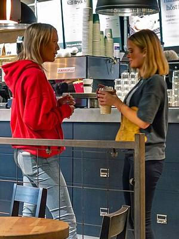
thu26novOtherGrupo de Conversación: Spanish practiceThursday 26 November, 18:00–19:30Vanchiglia (TO)with Libreria Sur- fri27novOtherAtelier della Tenuta: candle gobletFriday 27 NovemberBoves (CN) · 40 €with Philo Etico at Tenuta Carpe Diem
- fri27novOtherGrupo de Conversação: Portuguese practiceFriday 27 November, 18:00–19:30Vanchiglia (TO)with Libreria Sur
 fri27novOtherUpholstery workshop: round poufFriday 27 November, 18:00–20:00Barriera di Milano (TO) · 100 €with Magazzini Tessili
fri27novOtherUpholstery workshop: round poufFriday 27 November, 18:00–20:00Barriera di Milano (TO) · 100 €with Magazzini Tessili- fri27novOtherNoche de OWO: tarot and escape roomFriday 27 November, 18:00–23:00Quadrilatero (TO) · Freewith One Way Out
 sat28novOtherYoga & Henna & Chai: henna decorationSaturday 28 November, 09:00–11:30Boves (CN)with Flow Studio
sat28novOtherYoga & Henna & Chai: henna decorationSaturday 28 November, 09:00–11:30Boves (CN)with Flow Studio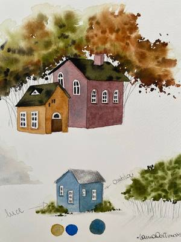
sat28novOtherChristmas lanterns: creative workshopSaturday 28 November, 09:30–17:00Borgo Po (TO)with Laura Cortinovis at TObed sat28novOtherPyrography workshop: Christmas traySaturday 28 November, 10:00–12:00Pozzo Strada (TO) · 20 €with Luke Expression at Spazio Saper Fare
sat28novOtherPyrography workshop: Christmas traySaturday 28 November, 10:00–12:00Pozzo Strada (TO) · 20 €with Luke Expression at Spazio Saper Fare sat28novOtherChristmas Lab Brunch: Christmas baublesSaturday 28 November, 10:00Borgo San Dalmazzo (CN)with Villa Teresa
sat28novOtherChristmas Lab Brunch: Christmas baublesSaturday 28 November, 10:00Borgo San Dalmazzo (CN)with Villa Teresa sat28novOtherMagic Paint upcycling: reinvent an objectSaturday 28 November, 11:00–18:00Cit Turin (TO) · 130 €with Me Gusta
sat28novOtherMagic Paint upcycling: reinvent an objectSaturday 28 November, 11:00–18:00Cit Turin (TO) · 130 €with Me Gusta- sat28novOtherAromatherapy workshop: oils for winterSaturday 28 November, 15:00–19:00Poirino (TO) · 50 €with Erboristeria La Calendula
- sat28novOtherKREA: painted jar and candleSaturday 28 November, 15:30–17:30Pianfei (CN) · 32 €with Philo Etico at Alter Ego
- sat28novOtherTarot Reading: tarot and vintageSaturday 28 November, 15:30–18:00Centro (TO) · Freewith Tarot with Love at Lizzy Vintage
 sat28novOtherCraft Club: collective creative afternoonSaturday 28 November, 16:00Cenisia (TO) · Freewith Pangramma
sat28novOtherCraft Club: collective creative afternoonSaturday 28 November, 16:00Cenisia (TO) · Freewith Pangramma- sat28novOtherThe way of the Tarot: intro to readingSaturday 28 November, 16:30–18:30San Paolo (TO) · from 15 €with Riccardo Cappa at Ippoderma
- sun29novOtherCandle workshop: candle makingSunday 29 NovemberAsti (AT)with Il Tempio Creativo at Mysa
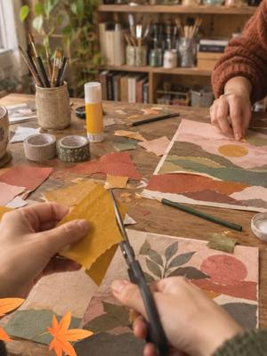
sun29novOtherCreative afternoon: collage, colour and decoratingSunday 29 November, 15:00–17:00San Salvario (TO) · 20 €with Mosca Bianca di Gaia Sandrelli- wed2decOtherDecoden workshop: Christmas phone caseWednesday 2 December, 17:15–18:30Pozzo Strada (TO) · from 15 €with Lumos Magic Decoden at Spazio Saper Fare
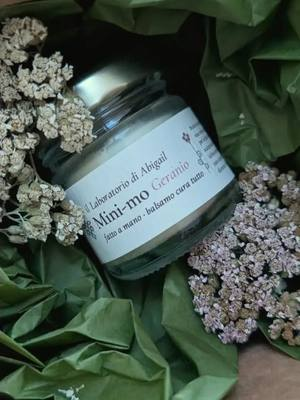
wed2decOtherMake your own gift: natural balmWednesday 2 December, 18:00–20:00San Salvario (TO)with Il Laboratorio di Abigail at Retrobottega wed2decOtherAperiworkshop: room spray and soy wax scent tabletsWednesday 2 December, 18:30–20:30Centro (TO) · 35 €with Oltre i Desideri at Winelivery
wed2decOtherAperiworkshop: room spray and soy wax scent tabletsWednesday 2 December, 18:30–20:30Centro (TO) · 35 €with Oltre i Desideri at Winelivery- wed2decOtherChristmas Open Studio: gifts and decorationsWednesday 2 December, 19:00–21:30Aurora (TO) · 15 € per eveningwith Velvet Truffle Riot
- thu3decOtherCreative workshop: evening with aperitivoThursday 3 December, 19:00Cuneo (CN) · 27 €with Philo Etico at Celeste Caffè
 fri4decOtherThe Scent of Presence: natural incenseFriday 4 December, 18:00–20:00San Salvario (TO) · 45 €with Masala Studio with Terra Yoga
fri4decOtherThe Scent of Presence: natural incenseFriday 4 December, 18:00–20:00San Salvario (TO) · 45 €with Masala Studio with Terra Yoga sat5decOther3D printing workshop: a Christmas gift boxSaturday 5 DecemberTurinwith Hiki3D
sat5decOther3D printing workshop: a Christmas gift boxSaturday 5 DecemberTurinwith Hiki3D sat5decOtherMake your own fortune cookie: polymer claySaturday 5 December, 16:00–18:00Pozzo Strada (TO) · 30 €with Oltre i Desideri at Spazio Saper Fare
sat5decOtherMake your own fortune cookie: polymer claySaturday 5 December, 16:00–18:00Pozzo Strada (TO) · 30 €with Oltre i Desideri at Spazio Saper Fare sun6decOtherWoodwork workshop: mechanical birdSunday 6 December, 11:00–13:00San Salvario (TO) · 25 €with Edelweiss Toys at San Salvario Emporium
sun6decOtherWoodwork workshop: mechanical birdSunday 6 December, 11:00–13:00San Salvario (TO) · 25 €with Edelweiss Toys at San Salvario Emporium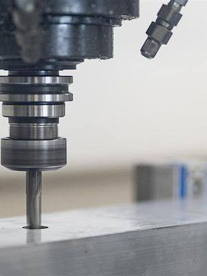
wed9decOtherHow To: CNC milling for ChristmasWednesday 9 December, 18:00–20:00Lingotto (TO) · sold outwith Damiano Frison at Fablab Torino- fri11decOtherTroglodyte’s delight: exploring in the darkFriday 11 December, 18:30–21:00San Salvario (TO) · Freewith Sofia Salvatori at Antro
 sat12decOtherTiffany glass workshop: Christmas specialSaturday 12 December, 10:00–17:00Turin · 130 €with Across the Glass
sat12decOtherTiffany glass workshop: Christmas specialSaturday 12 December, 10:00–17:00Turin · 130 €with Across the Glass- tue15decOtherEnigmaticorbits: a perception workshopTuesday 15 December, 18:30–20:30San Salvario (TO) · Freewith Antro
- wed16decOtherChristmas mini-workshop: glass decorationWednesday 16 December, 19:00–21:00Turin · 35 €with Across the Glass
- thu17decOtherThe Oracle of Changes: I Ching and artThursday 17 December, 20:30–22:30San Salvario (TO) · Freewith Jacopo Foglietti at Antro
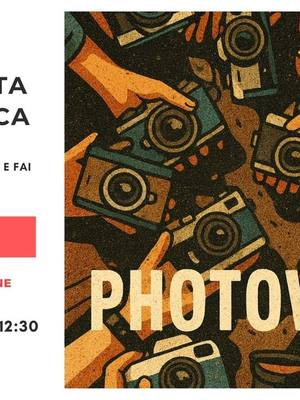
sat26decOtherPhotowalk: exploring the city as a groupSaturday 26 December, 10:30–12:30Quadrilatero (TO) · 2 €with BlaBla Photowalk Events- sat30janOtherEasy night photography: tripod shotsSaturday 30 January, 21:00Centro (TO) · from 55 €with Workshops Fotografici eu with Aldo Diazzi
- sun31janOtherPhotography workshop: panningSunday 31 January, 10:00–13:00Centro (TO) · from 55 €with Workshops Fotografici eu with Aldo Diazzi
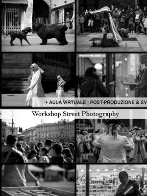
sun31janOtherStreet photography workshop: shooting the citySunday 31 January, 14:00–17:00Centro (TO) · from 55 €with Workshops Fotografici eu with Aldo Diazzi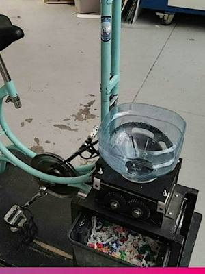
from11febOtherPrecious Plastic: objects from recycled plasticfrom Thursday 11 February to Thursday 11 March, every Thursday, 18:30–20:30Lingotto (TO) · 65 €with Ivan Martini at Fablab Torino- from20febOtherNatural skincare workshops: soap and creamsfrom Saturday 20 February to Saturday 22 MayProvince of Turin (TO)with Il Laboratorio di Abigail
- tue9marOtherHow To: hands-on laser cuttingTuesday 9 March, 18:00–20:00Lingotto (TO) · 5 €with Fablab Torino
- tue16marOtherHow To: stickers with a vinyl cutterTuesday 16 March, 18:00–20:00Lingotto (TO) · 5 €with Fablab Torino
 dateTBDOtherCascina Roccafranca: this season’s coursesDate TBDMirafiori (TO)with Cascina Roccafranca
dateTBDOtherCascina Roccafranca: this season’s coursesDate TBDMirafiori (TO)with Cascina Roccafranca dateof your choiceOtherUpholstery and restyling: poufs and furnitureDate of your choiceBarriera di Milano (TO) · from 20 €with Magazzini Tessili
dateof your choiceOtherUpholstery and restyling: poufs and furnitureDate of your choiceBarriera di Milano (TO) · from 20 €with Magazzini Tessili dateTBDOtherPhotography course: beginner and intermediateDate TBDCentro (TO)with Ivana Sunjic at Polo Le Rosine
dateTBDOtherPhotography course: beginner and intermediateDate TBDCentro (TO)with Ivana Sunjic at Polo Le Rosine- dateTBDOtherPhotography workshop: portrait and lightDate TBDCentro (TO)with Ivana Sunjic at Polo Le Rosine
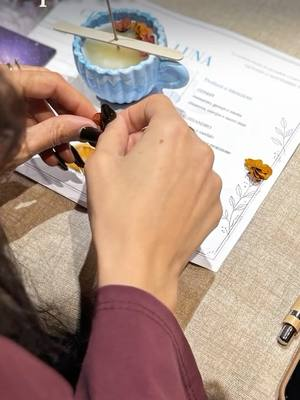
dateTBDOtherCards and Moon circle: intentions and oraclesDate TBDTurinwith Tarot with Love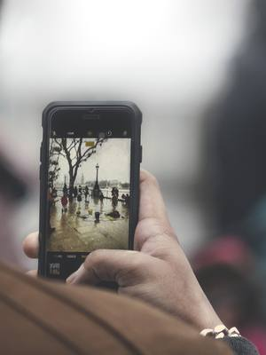
dateTBDOtherPhotography course: capturing an emotionDate TBDSan Mauro Torinese (TO)with Davide Furia at upTOyou